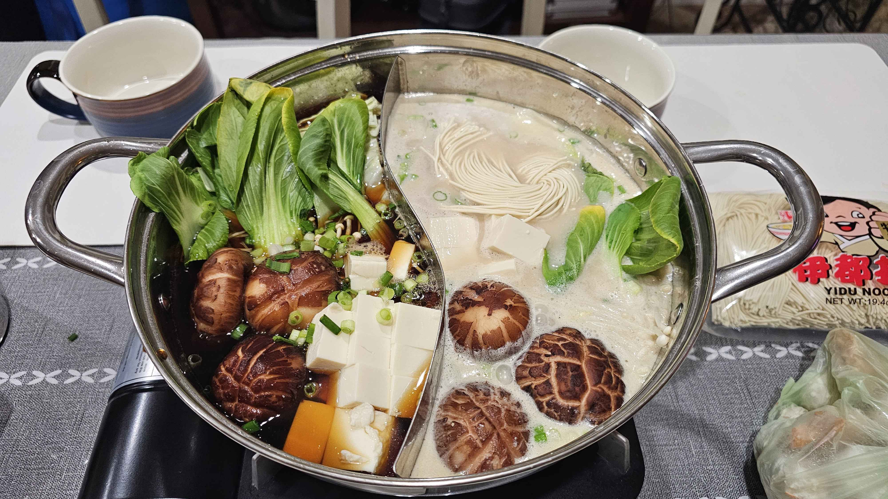

Sukiyaki / Ramen Hot Pot

Description
This recipe is originally from Namiko Hirasawa Chen from Just One Cookbook! You can find the original recipe here
My family likes to make this in a dual hot pot, so we usually make a Ramen base to go with it as well!
This is a family favorite, two soup broths in a pot, fired on a portable stove in the middle of the table! The Sukiyaki provides a sweet and savory flavor, while the Ramen makes for a delightful meaty and full flavor. We also like to mix spicy soup base into the ramen broth as well for a nice heated kick!
Ingredients
Dashi
- 500 ml of water
- 5 grams of powdered dashi stock
Sukiyaki Sauce
- 120 ml of sake
- 120 ml of mirin
- 38 grams sugar
- 120 ml of soy sauce
Ramen Base
We cheat a little and use a Costco Tonkatsu Ramen Broth Base with spicy hot pot soup base
- 1 Costco Tonkatsu Ramen Broth Base carton
- Pack of Spicy Hot Pot base
Add in spicy base to your desired level of spiciness
Soup Toppings
A wonderful thing about this recipe and having it in a hotpot style, is that you can use any vegetable/meat/mushrooms that you may have. This is what we usually add to ours:
- Napa Cabbage
- Green Onions
- Bokchoy
- Carrots
- Enoki Mushrooms
- Shiitake Mushrooms
- Tofu
- Tofu Skins
- Assorted Fishballs
- Udon Noodles
- Glass Noodles
- Sliced Hot Pot meats: Beef/Lamb/Pork
Steps
Dashi and Sukiyaki Base
- Prepare 500ml of water and mix with 5 grams of powdered dashi stock, set aside
- To make the sukiyaki sauce, combine 120 ml sake and 120 ml mirin in a small saucepan. Bring it to a boil and reduce the heat to simmer and let the alcohol evaporate for a minute or so.
- Add 38 g sugar and 120 ml soy sauce and mix together. Bring it back to a boil. Once the sugar is completely dissolved, turn off the heat and set it aside.
- Transfer the sauce to a pitcher and bring both the dashi and the sauce to the table. Tip: You can make the sukiyaki sauce ahead and store it in an airtight container in the refrigerator for up to a month.
Preparing Soup Ingredients
- Wash all vegetables and destem shiitake mushrooms
- Slice and cut vegetables in sharable portions
- Organize all ingredients onto plates for the hot pot
Eating The Hot Pot!
- Add sukiyaki base in one side of the dual pot, use dashi stock to dilute sweetness
- Add in ramen broth to the other side of the pot
- Wait for the broths to heat up from the portable stove, once at a simmering temperature, drop in your desired ingredients in and enjoy!